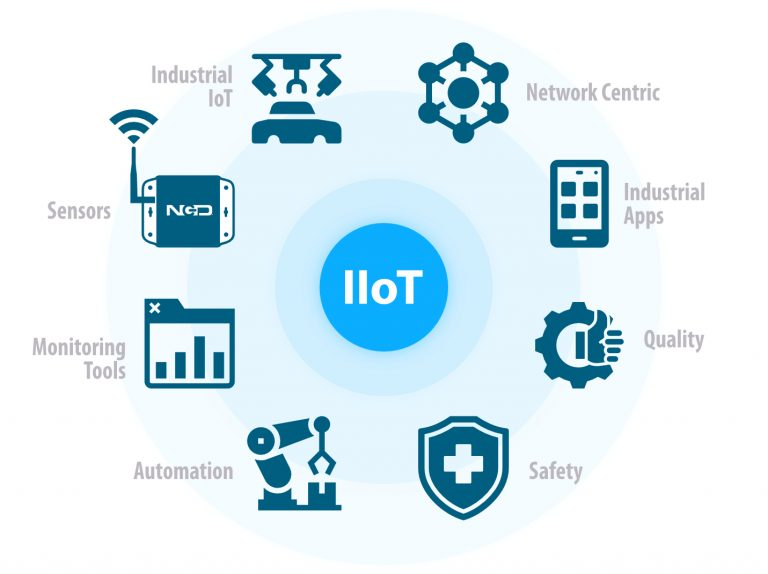

IoT stands for Internet of Things. It refers to the interconnectedness of physical devices, such as appliances and vehicles, that are embedded with software, sensors, and connectivity which enables these objects to connect and exchange data. This technology allows for the collection and sharing of data from a vast network of devices, creating opportunities for more efficient and automated systems. Internet of Things (IoT) is the networking of physical objects that contain electronics embedded within their architecture in order to communicate and sense interactions amongst each other or with respect to the external environment. In the upcoming years, IoT-based technology will offer advanced levels of services and practically change the way people lead their daily lives. Advancements in medicine, power, gene therapies, agriculture, smart cities, and smart homes are just a few of the categorical examples where IoT is strongly established. IOT is a system of interrelated things, computing devices, mechanical and digital machines, objects, animals, or people that are provided with unique identifiers. And the ability to transfer the data over a network requiring human-to-human or human-to-computer interaction.
